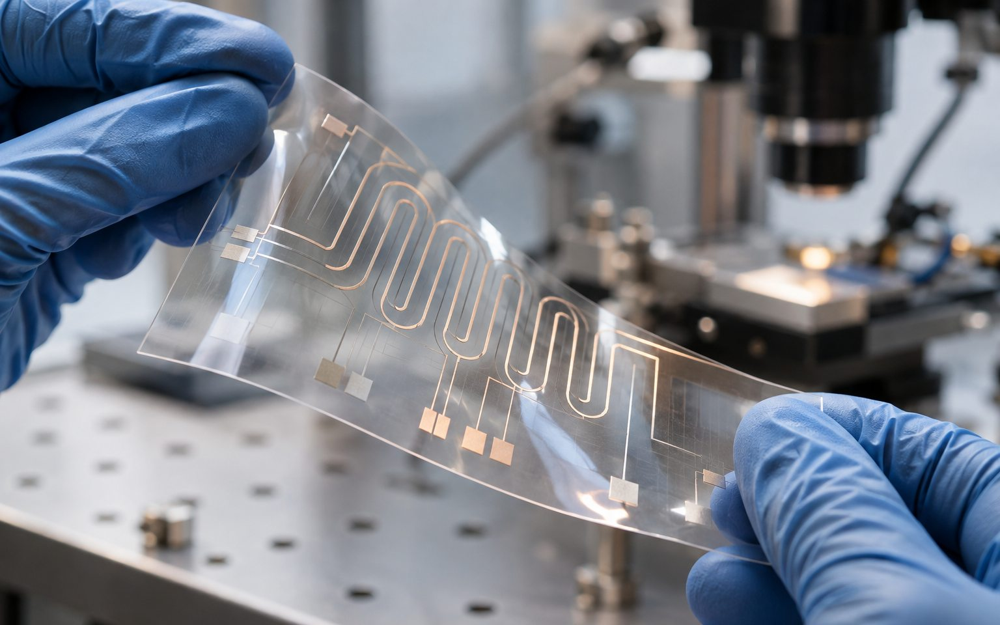

Core research
Memory Device Physics & Reliability
Investigating how interfaces, defects, and charge transport govern memory switching, variability, and long-term stability.
Research
I study how interfacial chemistry, defects, and electronic and ionic transport shape memory states, switching variation, and reliability. Published device and array studies test these mechanisms across several electronic platforms.
Research Areas
Core research
Investigating how interfaces, defects, and charge transport govern memory switching, variability, and long-term stability.

Core research
Connecting analog memory behavior with fabricated device arrays, electrical readout, and computing validation.

Connected platform
Engineering molecular, thin-film, and oxide interfaces to study charge injection and device reliability.

Connected platform
Examining electrical variability in printed and stretchable interconnects alongside optoelectronic device interfaces.
Selected Research Contributions
Hydrogen bonding suppresses interfacial traps to stabilize analog conductance updates.
>8× lower trap density · 7 × 7 crossbar
Project detailsOptical helicity programs persistent conductance states that remain electrically readable in a device array.
72 distinguishable states · 10⁶ s retention
Project detailsAn ALD TiO₂ interlayer reduces interface traps and enables low-power optoelectronic memory.
15× lower trap density · ≈0.7 µW switching power
Project detailsMolecular contacts and ALD-grown oxide electrodes provide complementary interface strategies for photovoltaic and capacitor devices.
Project detailsPrinted-film thickness helps explain resistance variation between stretchable interconnect traces.
Project detailsResearch Outlook
Future questions building on published device and array studies.
Future research directions
Can electrical noise reveal the sources of analog-memory variability before reliability degrades?
How do device variability and read noise affect array computation, and which design choices reduce the errors?
How do interface defects and processing conditions control leakage and long-term stability in thin-film and capacitor devices?